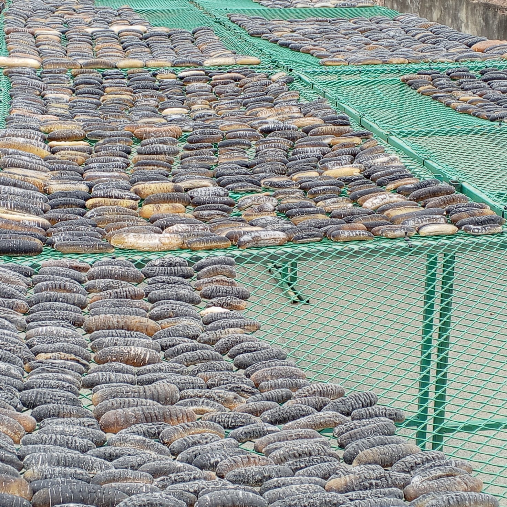
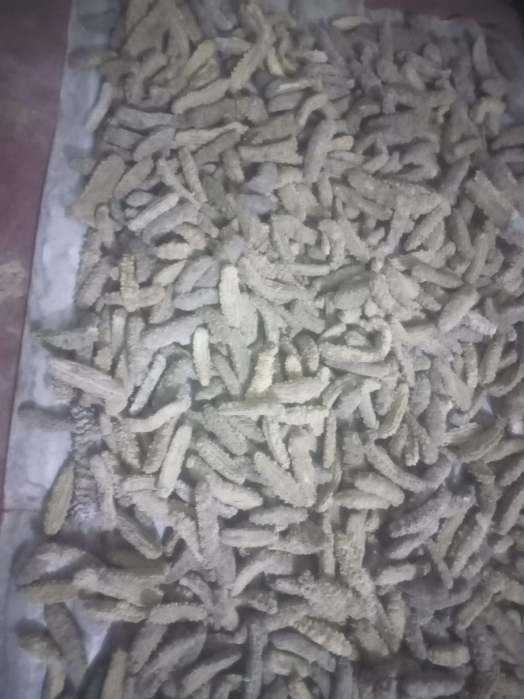
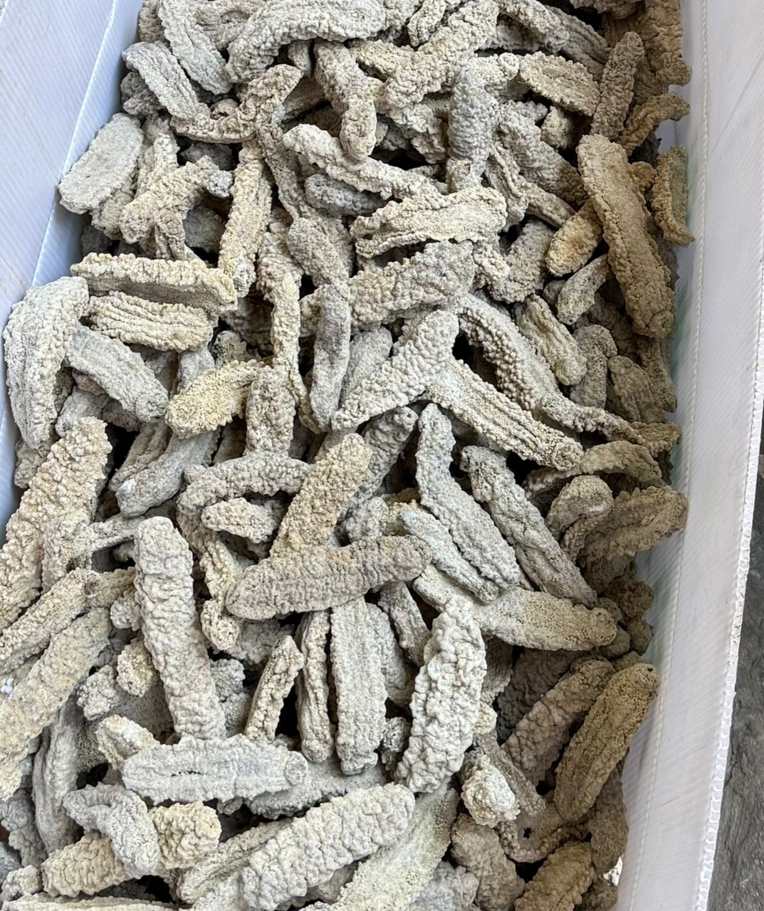
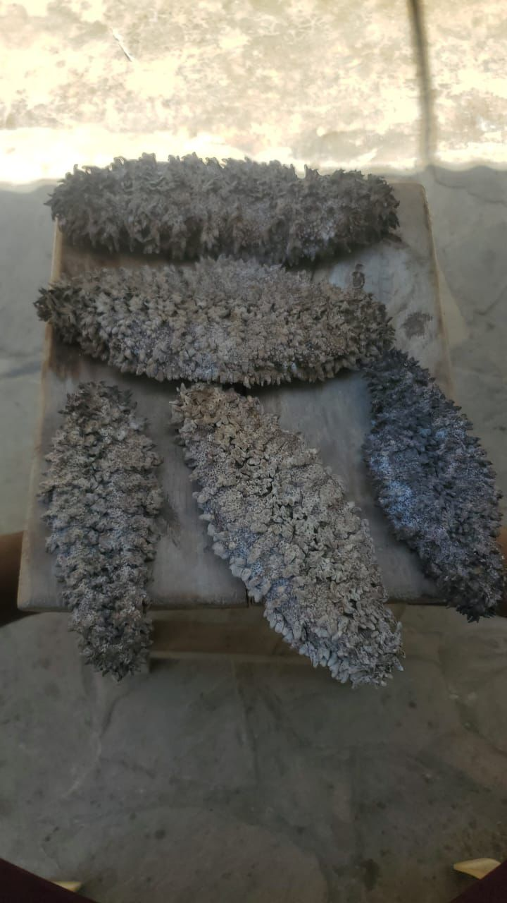
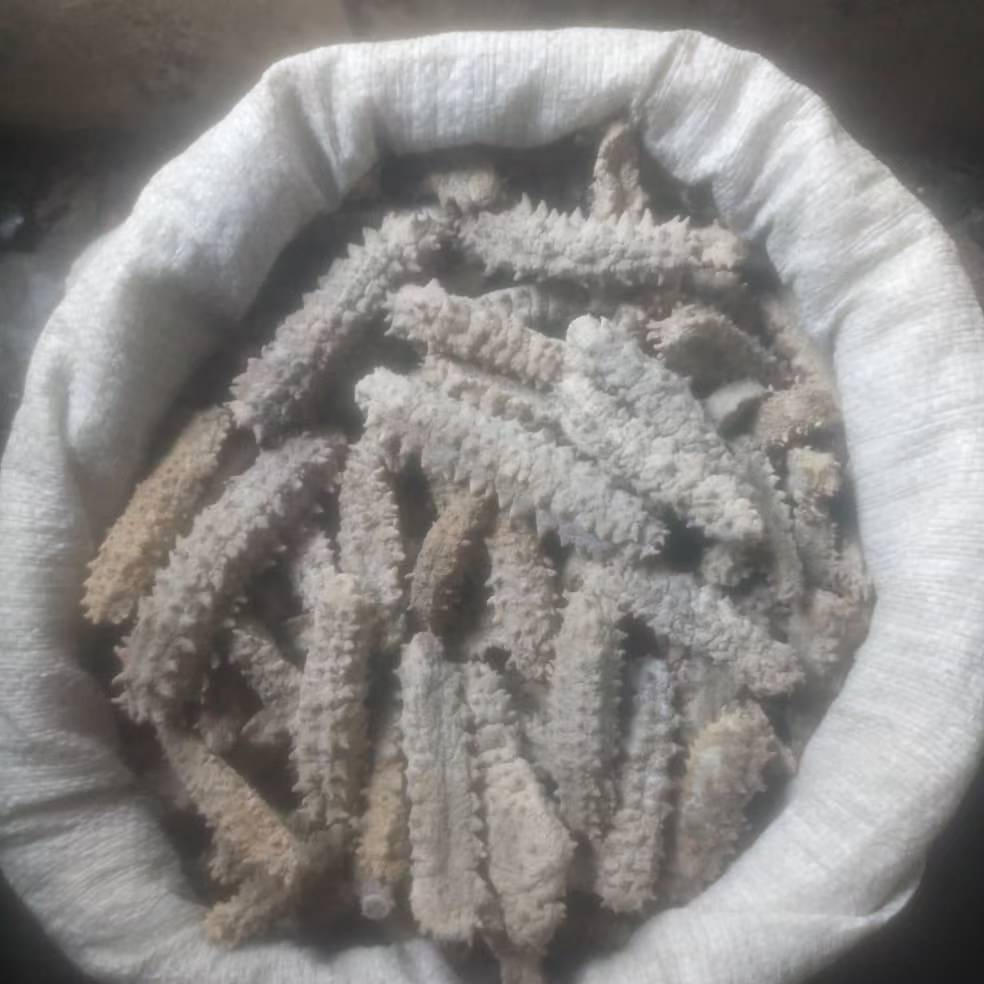
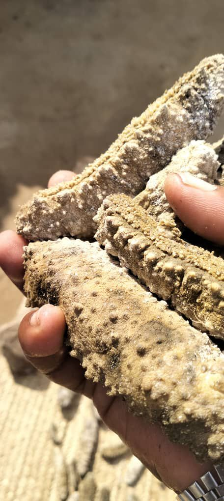
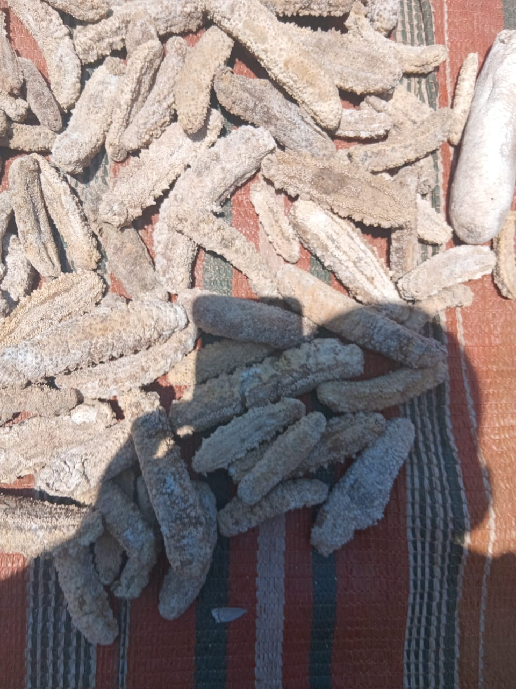
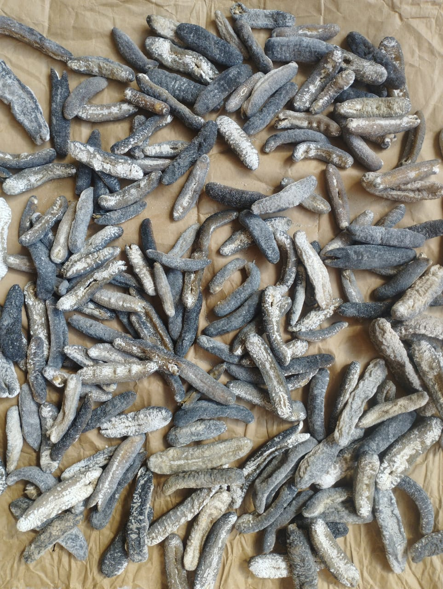
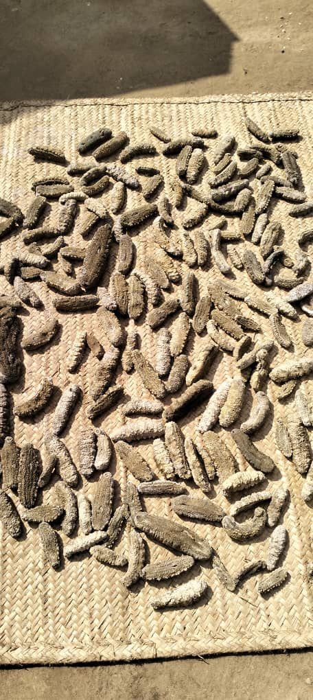
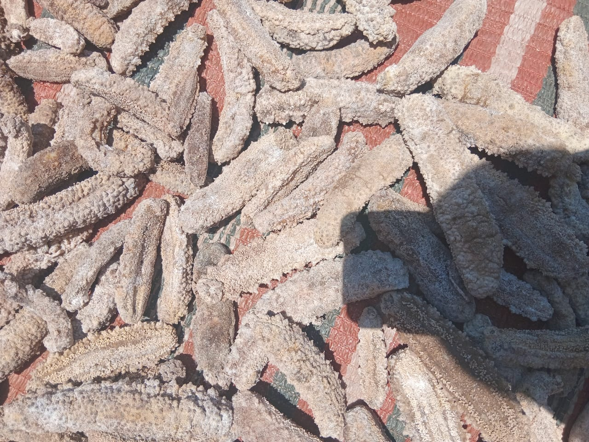

Our Story: Quality Marine Products from Kenya
Bringing the best of the Indian Ocean to the world

Welcome to Premium Fish Maw & Sea Cucumber Kenya – your trusted partner for high‑quality marine exports. Based in the historic port city of Mombasa, we have been connecting international buyers with sustainably harvested fish maw and sea cucumber for over a decade. Our mission is simple: deliver premium products while supporting local fishing communities and preserving the rich marine biodiversity of the Kenyan coast.
Who we are
We are a family‑owned business with deep roots in the coastal region. Our team combines traditional knowledge of the sea with modern processing and export practices. We work directly with small‑scale fishermen, ensuring fair prices and responsible harvesting methods. This close relationship allows us to trace every product back to its origin – something our global clients value.
Our products
We specialize in two main categories: fish maw (dried swim bladders) and sea cucumber (both dried and frozen). Our fish maw is known for its high collagen content, consistent sizing, and pristine appearance – ideal for soups, traditional medicine, and health supplements. Our sea cucumbers are wild‑caught, carefully processed to retain nutrients, and sorted by species and grade to meet the demands of Asian markets, health food distributors, and restaurant suppliers.
Why Kenya?
Kenya’s coastline offers ideal conditions for these premium marine species. The warm, clean waters of the Indian Ocean produce sea cucumbers with excellent texture and flavour, while the local fish species yield thick, high‑quality maw. Our proximity to major shipping routes also means efficient logistics to destinations worldwide – from China and Hong Kong to the USA and Europe.
Our commitment
We believe that successful trade goes hand in hand with environmental stewardship and social responsibility. That’s why we actively promote sustainable harvesting practices, support community development projects, and maintain transparent supply chains. Every order you place contributes to the livelihoods of coastal families and the protection of our oceans.
Whether you are a long‑time importer or exploring new sources, we invite you to experience the difference of authentic Kenyan marine products. Contact us today to discuss your requirements, request samples, or visit our facilities in Mombasa.








